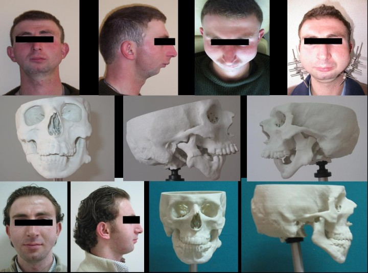
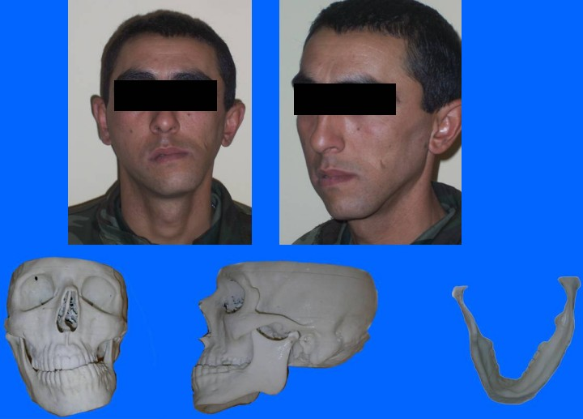
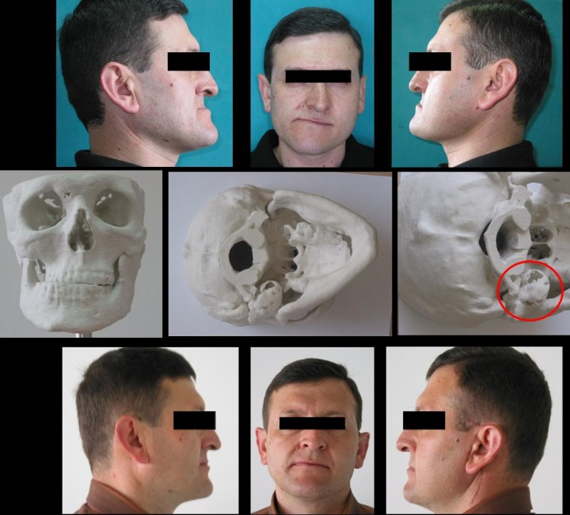
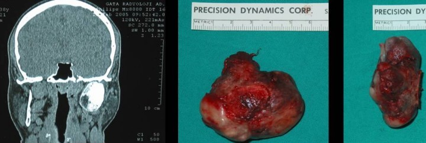
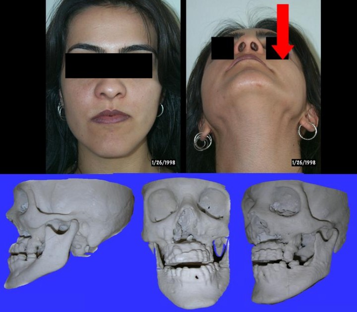

|
Not: Orijinal olarak TurkCADCAM.net
Dergisi 2. Sayýsý için hazýrlanmýþ bu
makale, Ocak 2008'de TurkCADCAM.net Portalý'ndan
yayýnlanmaya baþlamýþtýr.
Giriþ:
3 Boyutlu Katý Modeller hali hazýrda diþhekimliðinde taný, tedavi planýnýn oluþturulmasý ve tedavi planý ile belirlenen hedeflere ne kadar sadýk kalýndýðýnýn belirlenmesi amacýyla kullanýlabilecek ve hekime doðru planlamada yardýmcý olabilecek hata payý çok aza indirilmiþ olan görsel, üç boyutlu araçlardýr. Katý modeller anatomik yapýlarýn daha iyi anlaþýlmasý; tedavi öncesi ve sonrasý simülasyonlarý ile sorunun tam olarak tespit edilmesi, hatasýz implant-distraktörlerin üretimi ve öðrencilerin daha iyi eðitilmesi gibi faydalarýn yanýnda, ameliyat süresinin kýsaltýlmasý ve baþarýsýnýn arttýrýlmasý, hastanýn iyileþmesinden hastaneden erken ayrýlmasýný saðlamak gibi birçok görünmeyen hesap edilmeyen birçok faydalarý da saðlamaktadýr.
Yakýn gelecek de görüntüleme teknolojisinin geliþmesi ve mükemmel çýktýlarýn elde edilmesi ile gerek medikal ve dental sektörün birçok dalýnda gerekse farklý disiplinlerdeki bilim dallarýnýn da uðraþlarý arasýna gireceði öngörülmektedir. Medikal ve Dental amaçlý Katý modeller hastalardan elde edilen 3B tomografi, MR, gibi katmanlar halinde görüntü alan tekniklerin elde ettikleri verileri farklý firmalara ait bilgisayar yazýlýmlarý kullanarak, çeþitli 3B yazýcýlarda katý model olarak inþa edilmesi esasýna dayanýr (bakýnýz: otoinþa teknolojileri).
Sunulan vakalar GATA Diþhekimligi Bil. Mrk. Ort. A.D.'nýn 3B Medikal katý modellerin kullanýmýna dayanýlarak taný ve tedavi planýnýn oluþturulmasý, tedavi sonuçlarýnýn tahmini, baþarýlarý gibi bilgilerin deðerlendirilmesinde kullanýlmýþtýr.
Vaka-1 (F.Y.):
23 yaþýnda, eriþkin, erkek olan hastamýzda estetik, fonksiyon ve nefes almada problem, ciddi mandibuler hipoplazi "kuþ yüzü" görünümü vardý. Yapýlan ayrýntýlý klinik, radyolojik ve uyku labarotuar çalýþmalarý sonucu distraksiyon osteogenezisi ile alt çene kemiðinin uzatýlmasý planlanmýþtýr. Hastadan alýnan 3B tomografilerden yararlanýlarak 3B yazýcýlarla medikal katý model elde edilmiþtir. Bu model üzerinde yapýlan set-up ve ölçümler yardýmýyla uygulanacak cerrahi yöntem, kesi hattý, distraksiyon yönü ve distraksiyon miktarý belirlenerek tedavi planý oluþturulmuþtur. Tedavi sonunda ayný þekilde model elde edilerek tedavi planýna ne kadar sadýk kalýndýðý ve baþlangýçta belirlenen hedeflere ne kadar yaklaþýldýðý deðerlendirilmiþtir.

Resim 1: F.Y.' nin tedavi öncesi ve sonrasý fotoðraf ve 3B Z Corp. medikal modelleri.
Vaka-2 (E.D.):
22 yaþýnda, eriþkin, erkek, prognati inferior, laterognati ve buna baðlý olarak oklüzal düzlem eðimi artmýþ olan hastada ortognatik cerrahi planlanmýþtýr. Hastadan standart radyogarafik kayýtlar ve tomografik görüntüler alýnmýþtýr. Elde edilen 3B medikal katý model deðerlendirildiðinde hastanýn ramus kalýnlýðýnýn ince olduðu ve bir cerrahi giriþim sonrasý fiksasyonda sorun oluþturabileceði, hatta kýrýlabileceði saptanmýþtýr. Cerrahi konseyi kararý ile hastaya cerrahi bir giriþim uygulanmasýndan vazgeçilmiþtir. Bu vakada 3B medikal katý model kullanýmý olasý bir cerrahi yaklaþýmýn yapýlmasýný ve bu cerrahi yaklaþýma baðlý oluþabilecek komplikasyonlarý neler olabilecegini açýkça göstermektedir.

Resim 2: E.D.'nin fotoðraf kayýtlarý ve 3B Z Corp. medikal modelleri.
Vaka-3 (H.Þ.):
25 yaþýnda eriþkin erkek hasta. Yapýlan ayrýntýlý klinik radyolojik, patalojik ve biyokimyasal tetkikler sonucu alt çenenin sað kondilinin arka tarafýnda 60*30 mm. çapýnda osteokondrom tesbit edilmiþ ve kitlenin cerrahi yöntemlerle alýnmasýna ve ameliyatla çýkarýlacak bölgenin hastadan elde edilen tomografik kayýtlardan elde edilen 3B medikal katý modelinin hazýrlanmasý karar verilmiþtir.
Bu çalýþmada Medikal 3B katý model anatomik yapýlarýn daha iyi anlaþýlmasýna, cerrahi öncesi simülasyonuna, lezyonlarýn operasyon sýrasýnda tam olarak lokalize edilmesine ayrýca model üzerinde rekonstrüksiyon plaklarýnýn preoperatif olarak adapte edilmesine ve operasyon süresininde kýsaltýlmasýna yardimcý olacaðý düþünülmüþtür. Ayrýca medikal 3B katý model yapýlacak iþlemleri ve doðacak problemleri hastaya kolayca anlatýlabilmesine imkan vermektedir. Bu vakada sað mandibuler kondilin posteriorunda yer alan oldukça büyük boyutlardaki bir osteokondromun lokalizasyonu ve cerrahi planlamasý 3B model üzerinde yapýlmýþtýr. Model üzerinde incelendiðinde fasiyal sinir trasesinin tümörün deprese etmesi ile deðiþmiþ olabileceði ihtimali üzerinde durulmuþtur. Bunun neticesinde, tümöre komplikasyonsuz bir þekilde ulaþabilmek amacý ile modifiye "Blair" insizyonu kullanýlmýþtýr.

Resim 3: H.Þ.'nin operasyon öncesi ve sonrasý fotoðraf kayýtlarý, operasyon öncesi elde edilen 3B Z Corp. medikal modelleri.
Tümörün lokalizasyonu tam olarak bilindiðinden ulaþmada hiçbir zorlukla karþýlaþýlmamýþtýr. Ayrýca operasyon öncesi yapýlan deðerlendirmede olduðu gibi fasiyal sinirin tümörün büyük boyutlara ulaþmasý ile öne doðru yer deðiþtirdiði cerrahi sýrasýnda tespit edilmiþtir. Operasyon öncesi model üzerinde yapýlan deðerlendirmeler sonucu buna hazýrlýklý olunduðundan sinire hiçbir zarar verilmeden cerrahi kesiler gerçekleþtirilmiþ ve tümör tamamen alýnmýþtýr. Tümörün konservatif rezeksiyonla çýkartýlmasýna ve kondilektomiye gerek kalmadan tedavinin gerçekleþtirilebileceðine de yine model üzerindeki incelemeler neticesinde karar verilmiþtir. Bu giriþimde hasta cerrahiden en az travma görerek çýkmýþtýr.

Resim 4: Operasyonla çýkartýlan tümörün MR ve fotograf kayýtlarý.
Vaka-4 (B.P.):
20 yaþýnda, eriþkin bayan hasta. 10 yýl önce geçirdiði tarafik kazasýna baðlý Üst çene kemiðinde kýrýk ve oynama þikayeti ile gelmiþtir. Yapýlan kýlýnik, radyolojik ve biyokimyasal tetkikler sonucu üst çene kemiðinde operasyon yapýlmasýna eksik kemik parçalarýnýn tamamlanarak fiske edilmesine karar verilmiþtir.
Daha önce geçirdiði bir seri operasyon, yapýlacak cerrahi giriþimleri de kýsýtlamaktadýr. Bu bölgedeki kan dolaþýmýn bozulmasý, operasyon sahasýnýn tam olarak 3 boyutlu görülmesi ve buna göre ihtiyaç duyulan kemik dokusunun taþýnmasýna ihtiyaç duyulduðundan, alýnan tomografik verilerden yararlanýlarak 3B medikal katý modelin yapýlmasýna karar verilmiþtir. Bu þekilde hazýrlanan model çalýþmalarýnda cerrah öncelikle uygun kemik dokusunu elde ettikten sonra opare edeceði yeri açacaðýnda hem bölgenin daha az sürede dolaþýmýný bozacak hem de operasyon süresini kýsaltmakta en az travma ile ameliyatý tamamlamasý imkaný olmaktadýr.

Resim 5: B.P.nin operasyon öncesi 3B Z Corp. medikal model ve fotoðraf kayýtlarý.
|